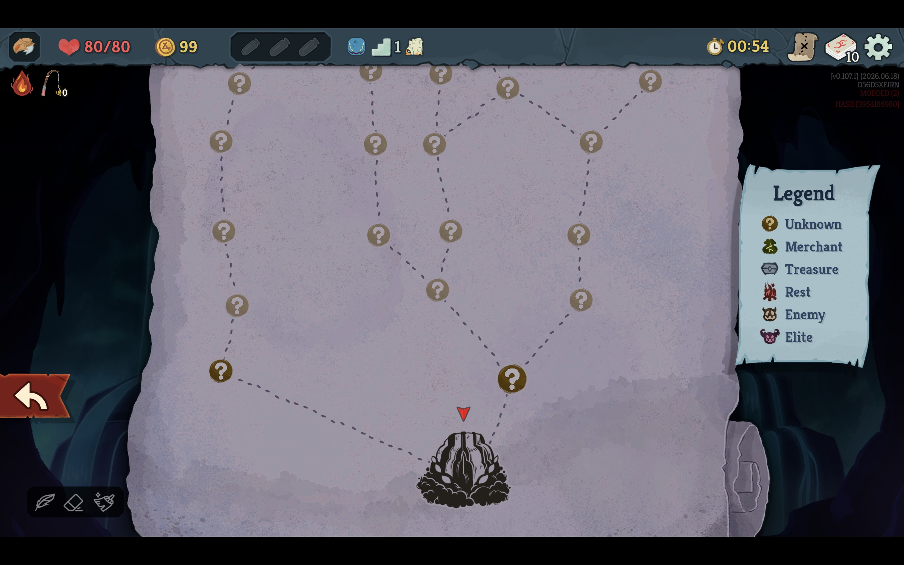
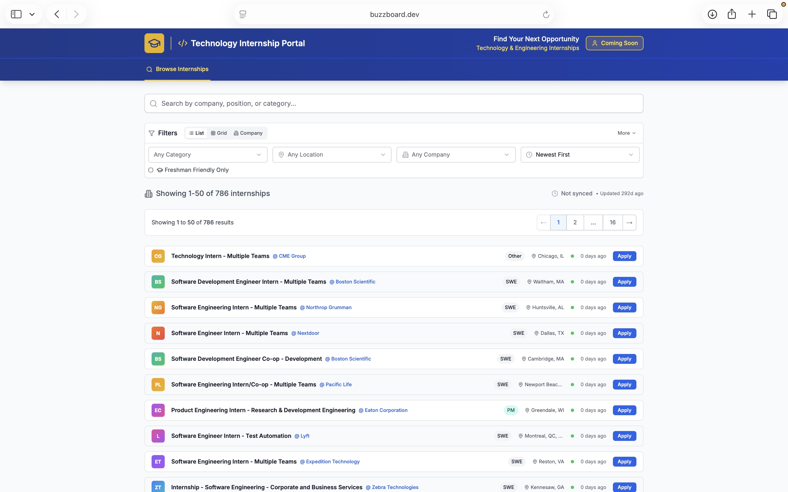

Projects
Microcontrolled Video Game Integration
ECE 2035 Final Project
For my final project in Programming for HW/SW systems, I developed a custom, hardware-oriented video game utilizing an ESP32 microcontroller and physical inputs. The project involved writing complex C script routines to handle physical game inputs and translate them into on-screen actions on an external display. The core logic required managing animated sprites, developing strict collision rules, and engineering real-time weapon mechanics. Ensuring the game loop ran efficiently without frame drops necessitated extensive debugging of runtime application crashes and logic errors.
Slay the Spire 2 "Chaos Mods"
ECE 1100 Individual Discovery Project
Discovery Project Idea
My starting pitch for this project was to explore non-physical software architecture by conceptualizing and programming a custom expansion for the game Slay the Spire 2. Originally, as detailed in my DiscoveryProject_PitchTemplate_ECE1100.docx.pdf, the idea was to introduce a row or two of "calamity squares" per act, alongside "corrupted strikes" that would periodically change their energy cost dynamically[cite: 1]. The overarching goal was to manipulate the game's core logic at runtime to inject these chaotic elements without breaking the underlying stability of the game.
Project Progress
I utilized C# and the HarmonyLib patching library to intercept and alter structural variables dynamically. As the semester progressed, the scope and design of the mod evolved significantly from my initial pitch:
Project Successes and Failures
A major roadblock early on was the steep learning curve associated with the Baseline framework, which often led to full application crashes by inadvertently overwriting critical map paths. A major success came when I finally figured out how to safely target specific events and properly build the custom RNG to inject the chaotic logic. Getting the game to launch, generate a fully interactive chaotic map, and run the encounters smoothly without crashing the host application was a massive win.
ECE Skills Gained
Through this project, I gained critical hands-on ECE skills in reverse engineering and reading compiled code. I drastically improved my proficiency in C# and learned how to use dynamic patching tools (HarmonyLib) for runtime memory manipulation. Additionally, I developed rigorous debugging methodologies to trace logic errors without corrupting the host system.
Final Thoughts
Overall, this was an incredibly rewarding experience that solidified my interest in the software and systems architecture threads of Computer Engineering. Taking a compiled system, understanding it under the hood, and successfully altering its behavior gave me a great perspective on robust software design. Moving forward, I would love to continue this project by expanding the custom cards and relics and refining how they interact directly with these new RNG map nodes.


Buzz Board Internship Portal
Georgia Tech Web Dev Collaborative
Developed in collaboration with the Georgia Tech Web Dev student organization, Buzz Board is a comprehensive internship and career-finding platform designed specifically for students. I assisted in architecting a scalable front-end system that integrates real-time job postings, detailed company profiles, and robust application tracking tools. This provides students with a centralized, interactive portal to seamlessly discover, filter, and apply for technical roles and co-ops.
